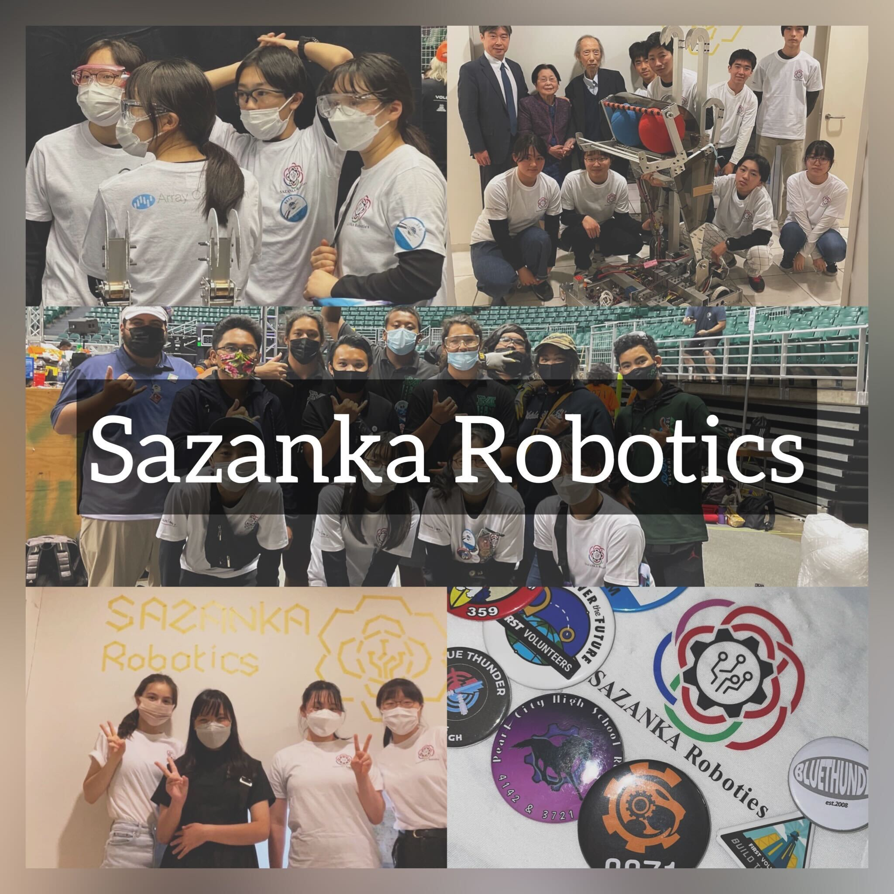

私たちについて

私たちSAZANKA Roboticsは令和2年度に発足し、
世界最大級の中高生ロボット競技会「FIRST Robotics Competition (FRC)」に参加しているチームです。
ロボット製作、企業訪問、運営など、中高生が主体となって活動し、
同時に地域社会貢献やSTEM教育の普及も行っています。
磨きたいスキルを極めたり個人の特技を惜しみなく発揮したりできる場です。
ロボット制作だけでなくコミュニケーションスキルを身に着けることもできます。
比較的小規模であるが故とても仲が良く、チーム一丸となって頑張っています!
何かご不明な点などございましたら
sazanka.robotics@gmail.comまでお気軽にご連絡ください。
FRCについて
FRCは、15歳から18歳までが対象の世界規模の国際ロボット大会です。
例年アメリカの２都市で世界大会が開催されます。
2021年度はコロナ禍による影響でオンライン開催となりましたが、2022年度は現地での大会が再開しました。
大会にかかる費用はスポンサーからの支援やクラウドファンディングなど自分たちで集め、活動場所も自分たちで探して活動します。
また、シーズン外の期間には地域奉仕活動をはじめとしたアウトリーチ活動を行います。
このアウトリーチもとても大切な活動となっています。
活動内容
FRC出場のため、オンラインでミーティングを行ったり、
集まってロボット作成を行なったりしています。
- 工学: ロボット設計や制作、プログラミングなど
- 広報: SNSアカウント、ウェブサイトの管理など
チームデータ
活動場所
- アレイ株式会社 スペースR
人数
- メンバー: 7人
- メンター: 6人
実績
- 2021シーズン
- Rookie Game Changer Award
- 2022シーズン
- Highest Rookie Seed Award
収入@2022シーズン
| 大会参加費一部立替金 | ¥ 75,000 |
|---|---|
| 2021シーズン残金 | ¥ 312,815 |
| スポンサー | ¥ 1,200,000 |
| クラウドファンディング | ¥ 0 |
| 利子 | ¥ 0 |
| 合計 | ¥ 1,512,815 |
支出@2022シーズン
| 大会参加費 | ¥ 659,350 |
|---|---|
| 部品費 | ¥ 109,244 |
| 製作費 | ¥ 215,711 |
| 広告費 | ¥ 0 |
| 雑費 | ¥ 348,485 |
| 合計 | ¥ 1,332,790 |